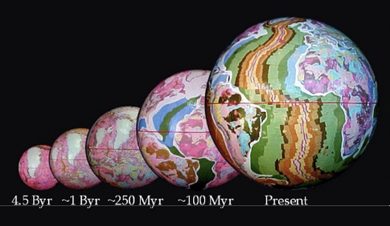
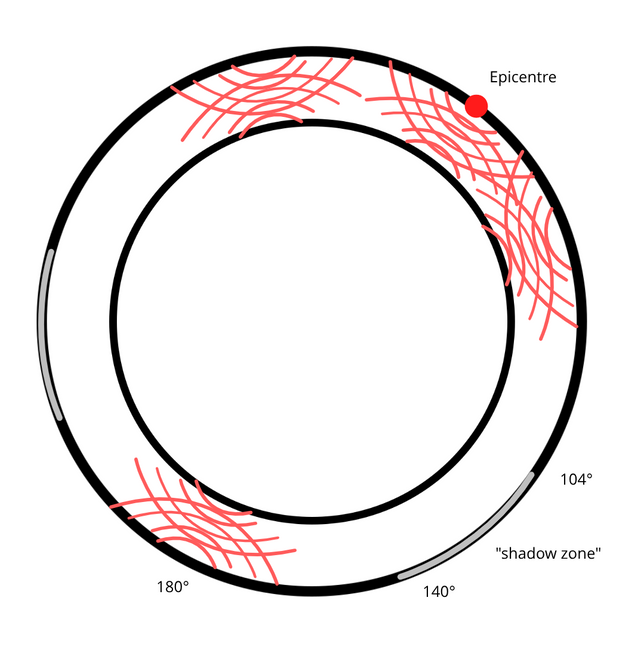
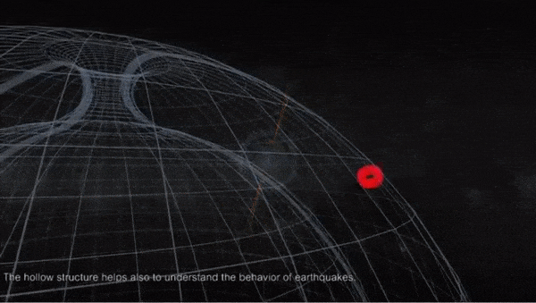
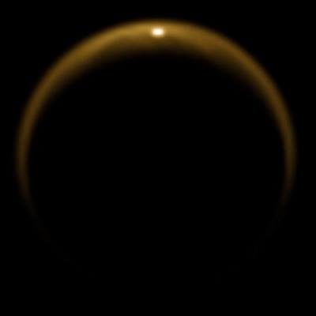
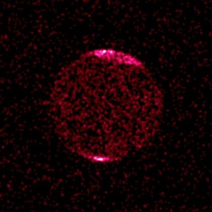
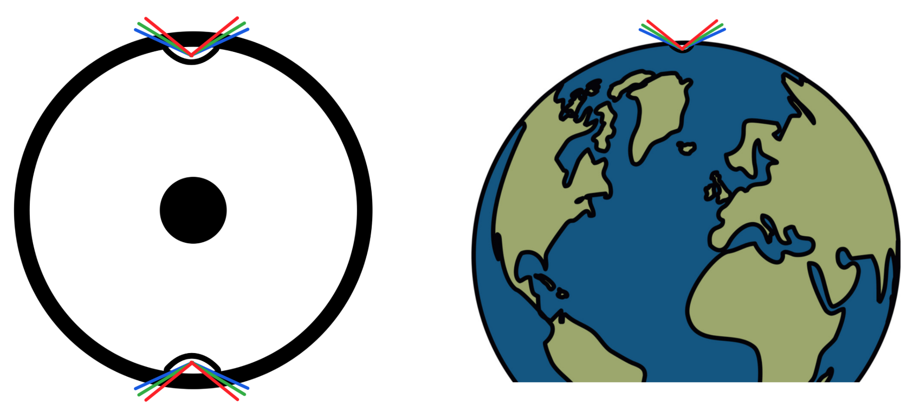
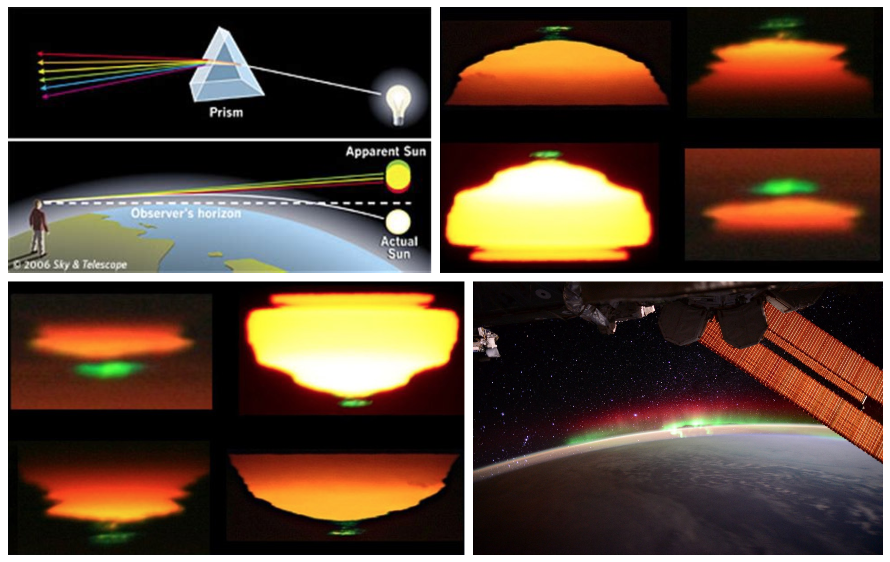
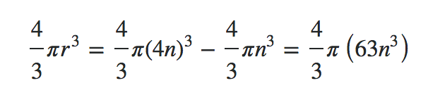
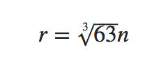
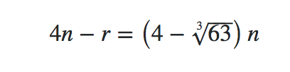

It can be seen that the Earth radius has increased, simply by looking at continental drift (Wegener, 1912) and the age of the oceanic crust. The science of expansion tectonics recognizes that the Earth radius has changed (in contrast to plate tectonics that posits a fixed radius), and based on radial expansion, it is quite intuitive that the Earth would be hollow. When you reverse continental drift, and also the continental shelf, you see a 4-fold change in radius, which equals a 50-fold change in volume. One way to grow that way, without increase in mass, is if the mass is pushed outwards and surrounds a hollow interior.
This simple experiment shown below, rotating sphere of water in microgravity (close to zero gravity) filled with air bubbles, shows how distribution of matter is affected by rotation.
This model for how seismic waves from Earthquakes spread, that they loose energy with distance, then converge at other side of Earth, 180°, on a globular hollow planet with a lithosphere crust, with a "shadow zone" between around 104° and 140°, fits perfectly with the data.
 This is Titan in infrared at 5 micron taken in 2009[1], could this be a polar hole, on a hollow Titan, and the thick atmosphere of Titan reflecting light on those wavelengths from the internal "sun" (a plasmoid) just like you clearly see the atmosphere of Titan does around the rest of the moon as those wavelengths are reflected from our sun?
The x-rays emitting from Jupiter's poles that CHANDRA discovered two decades ago[2], could they be signatures of polar holes on Jupiter, a hollow gas giant?
Casual observation shows that the aurora, along a vertical axis, have a color gradient very similar to natural chromatic dispersion. That would be expected if the aurora were reflections of light from the central sun, shining through the polar hole, and a mere coincidence if the aurora were from excitation of charged particles.

The chromatic layers in aurora could be explained as the inverse of mirages from the sun during sunset, that light up ice-crystal sheets in the atmosphere that follow the magnetic field lines. Water vapour from the "polar fountain" (NASA, 1997) would reach up into the thermosphere and form sheet-like "clouds" of ice-particles, similar to the "plume" of water vapour at the pole of Europa that reaches 200 km up in the atmosphere (NASA, 2012). Those clouds would follow the magnetic field lines, similar to what Kellner described in 1963.
 Knowing that the Earth has grown multi-fold, the mass of the archaic Earth can be assumed to be equivalent to the width of the present Earth crust, on a hollow, inflated planet. If a volume equivalent to a solid sphere of radius *n* is pushed towards the surface of a sphere with radius *4n*, how wide is the layer that forms, expressed relative to the radius *n*?
Consider a new radius of r for the amount inside the sphere that doesn't include the volume which has been pushed onto the inside of the sphere of radius 4n. Its volume will be the original sphere volume less the volume of the matter added to its insides. Thus, using the formula for the volume of a sphere, we get that
Dividing both sides by 4/3π and taking cube roots, we get that
Thus, the width of the layer that forms would be the difference between the original & new radii, i.e.,
Below is a detailed analysis, that gives crustal widths of 33 km, 277 km and 704 km based on the density of the archaic Earth, cambrian Earth and mesozoic Earth. Most "hollow Earth" memes mention a crust width of around 800 km.
With the present Earth radius = 6371 km, then archaic Earth radius n = 6371/4 = 1592 km, present Earth radius = 4n, and the Earth crust 4 * 1592 - (third root of 63)*(1592) = 33 km.
If the density is assumed to be equivalent to the cambrian Earth, the same equation gives n = 6371/2 = 3185 km, and the Earth crust 2 * 3185 - (third root of 7)*(3185) = 277 km.
Then if density is assumed to be equivalent to the mesozoic Earth, the width is from n = 6371/1.5 = 4247 km, and (1.5 * 4247) - ((cube root 19) / 2) * 4247 = 704 km.
"In the event of weak airglow or a bright auroral display, there is no doubt in anyone’s mind what to call the phenomenon; for the borderline cases of a bright airglow or faint aurora, however, there is considerable doubt! Generally one distinguishes between the two on physiological grounds, calling a structure "aurora” if it is bright enough to be seen. But according to Roach, McCaulley, and Marovich [1959a] there is no abrupt change at the visual threshold in the frequency distribution of intensities of the green line, h5577; thus it is not evident on the basis of brightness alone that there is a physical distinction between auroral and airglow green-line emission. "
Aurora and airglow as reflections from an internal sun, with chromatic dispersion, and airglow as light reflecting off the aurora or "crown" of the Earth, a bit like a lamp-shade.